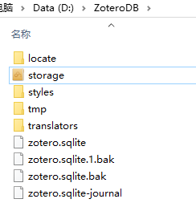
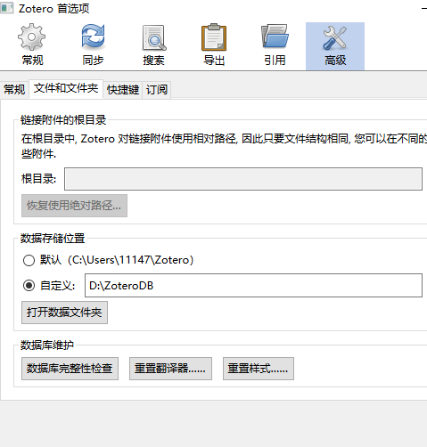

zotero文献资料管理
应用场景
管理论文，分类和整理论文，收藏图书信息(建立自己的书库),收藏github仓库并建立索引，以及各种资料收集整理。
与Evernote的区别
印象笔记主要是用于剪藏网页，记录笔记等，而zotero更偏重论文，信息索引等信息整理部分，当然你也可以对信息做笔记，但侧重点在信息索引。
安装
http://www.zotero.org/download/ （注：浏览器插件也要安装）
导入文献方式
互联网自动识别：Web Translators (URL bar icon) 手动输入：Manual Input or Edit From a bibliographic 文件导入：format (RIS, BibTeX, MARC, etc.) 通过标示符增加：Add by identifier (DOI, ISBN, PMID) 通过PDF元数据识别：Add PDF then Retrieve Metadata 从网页识别：Get any Webpage with basic data
记录几个比较实用的。
互联网自动识别
比如你要把深度学习这本书作为加入收藏，那就进入豆瓣书籍页面，打开后右上角zotero插件就会变成书的样子，点击即可保存

通过标示符增加
这里可以通过手动输入ISBN，DOI等信息直接导入：

导入Google学术
在谷歌学术中搜索你想找的领域，然后就可以通过插件直接批量导入了：

导入arxiv
对于我们搞计算机的，arxiv上的论文还是看的不少的，可以直接打开arxiv链接，通过插件直接save。保存后会看到相应的快照甚至是对应的pdf也已经在里面了，非常方便：

导入pdf
如果之前已经下载了些pdf，可直接拖进zotero，然后右键选择解析metadata就可以了。（一般可自动完成，没有的话可以手动）
插件
- zotfile: pdf文件操作
- markdown here： markdown笔记
- ZoteroQuickLook: 可快速预览文件内容
数据同步
这里推荐直接通过百度云，坚果云之类的国内解决方案，我是通过百度云直接将storage文件夹进行同步： 
这里文件目录是我自定义的，可以在编辑->首选项->高级下的数据存储位置处修改： 
自定义搜索
我们可以构造自己的条件来进行文献搜索，比如我想将近7天的论文建立一个索引，每天都可以查看最近七天加入的论文，可以在我的文库右键选择新建搜索，并添加以下条件即可：